dat <- read_csv("data/clr_audpc.csv")# Calculate max. severity column
dat1 <- dat %>%
group_by(X1) %>%
mutate(max = max(`1`,`2`,`3`, `4`, `5`, `6`, `7`, `8`, `9`, `10`, `11`, `12`))
# Calculate mean AUDPC and Max. severity
sev <- dat1 %>%
group_by(year, site, variety, tree) %>%
summarize(mean_max = mean(max), mean_audpc = mean(AUDPCm)) sev %>%
ggplot(aes(log(mean_max), log(mean_audpc)))+
geom_point()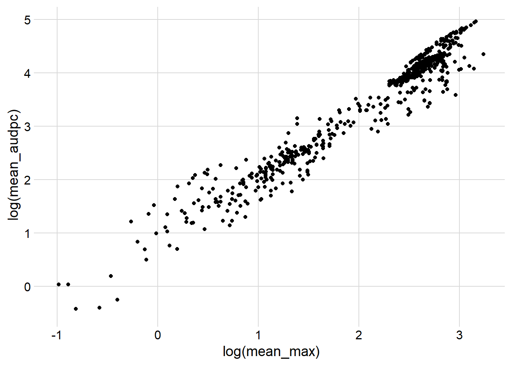
sev_agaro <- sev %>%
filter(site == "agaro")sev_agaro %>%
ggplot(aes(reorder(variety, mean_audpc), mean_audpc))+
geom_boxplot()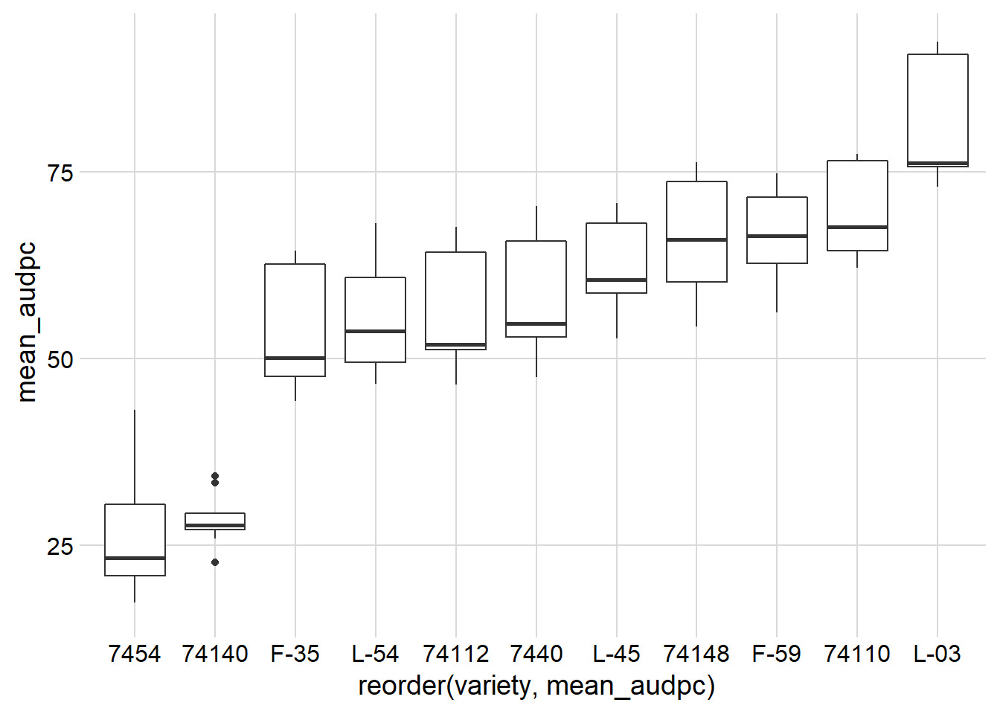
sev_agaro %>%
ggplot(aes(mean_audpc, mean_max, color = variety))+
geom_point()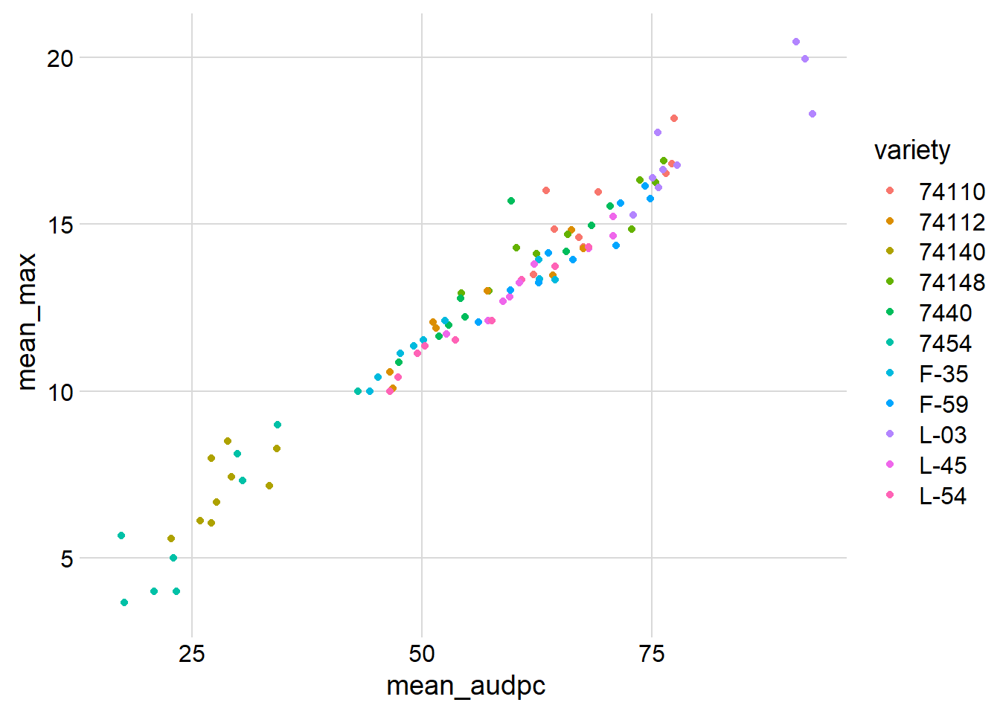
Fit and residuals
library(lme4)
m_audpc <- lmer(mean_audpc ~ variety + (1 | year), data = sev_agaro)
library(DHARMa)
simres <- simulateResiduals(m_audpc)
plot(simres)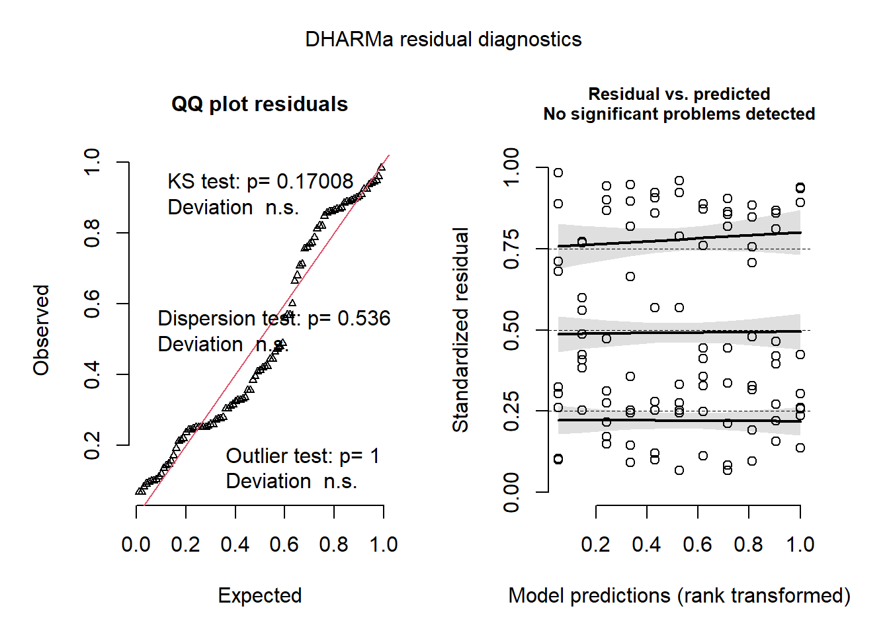
Obtain estimates of the means and perform multiple comparison
library(ScottKnott)
sev_audpc_agaro_sk <- with(sev_agaro,
SK(x= variety,
y=mean_audpc,
model='y ~ x',
which='x'))
plot(sev_audpc_agaro_sk)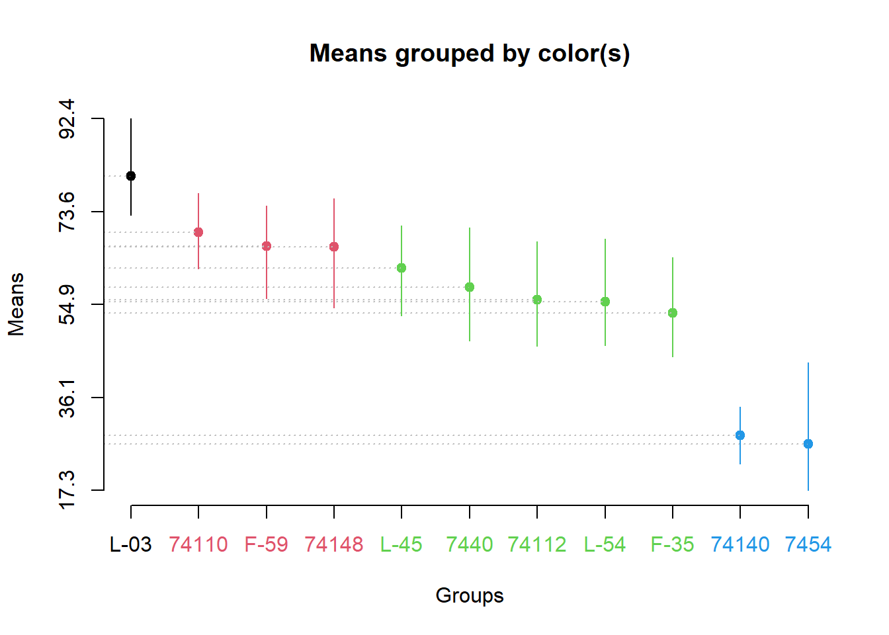
sev_agaro_sk <- summary(sev_audpc_agaro_sk)## Levels Means SK(5%)
## L-03 80.87374 a
## 74110 69.41341 b
## F-59 66.69438 b
## 74148 66.46266 b
## L-45 62.26834 c
## 7440 58.37164 c
## 74112 55.89470 c
## L-54 55.36701 c
## F-35 53.18969 c
## 74140 28.48526 d
## 7454 26.67095 dlibrary(patchwork)
# severity
p2 <- sev_agaro %>%
ggplot(aes(reorder(variety, mean_audpc), mean_audpc))+
geom_boxplot()+
labs(x = "", y = "AUDPC", title = "Site: Agaro", subtitle = "Severity")+
coord_flip()
sev_agaro_sk$Means <- round(sev_agaro_sk$Means, 1)
# Means table
library(gridExtra)
p2 + gridExtra::tableGrob(sev_agaro_sk %>% rename(Cultivar = Levels), rows = rownames("Levels"),
theme = ttheme_minimal(padding = unit(c(4, 4.5), "mm")))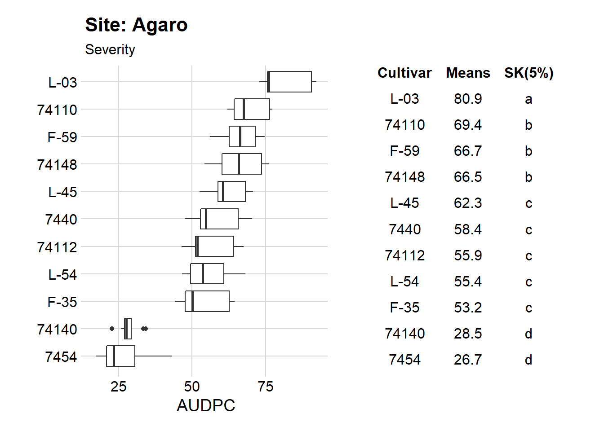
sev_gera <- sev %>%
filter(site == "gera")sev_gera %>%
ggplot(aes(reorder(variety, mean_audpc), mean_audpc))+
geom_boxplot()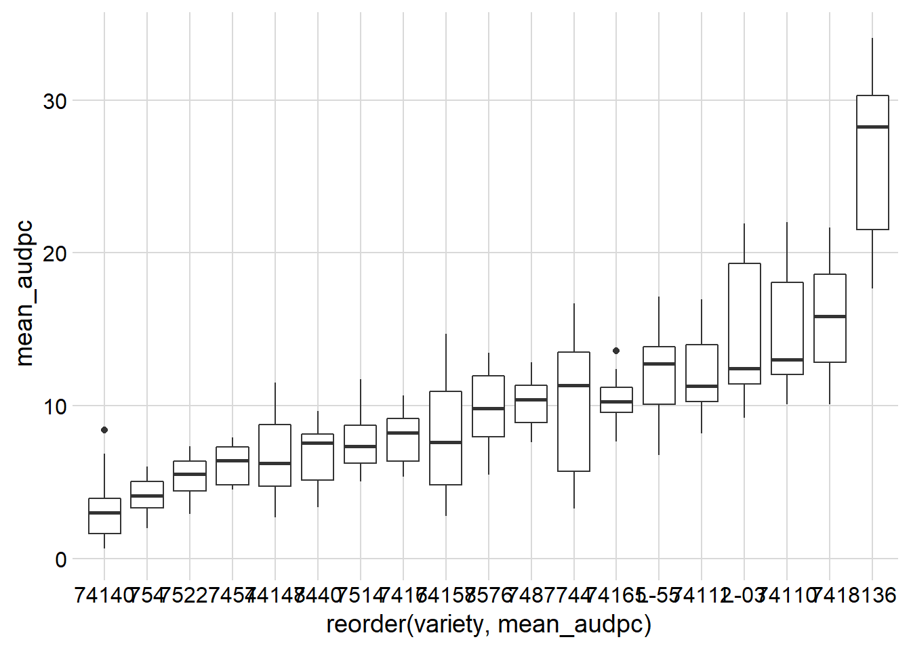
sev_gera %>%
ggplot(aes(mean_audpc, mean_max, color = variety))+
geom_point()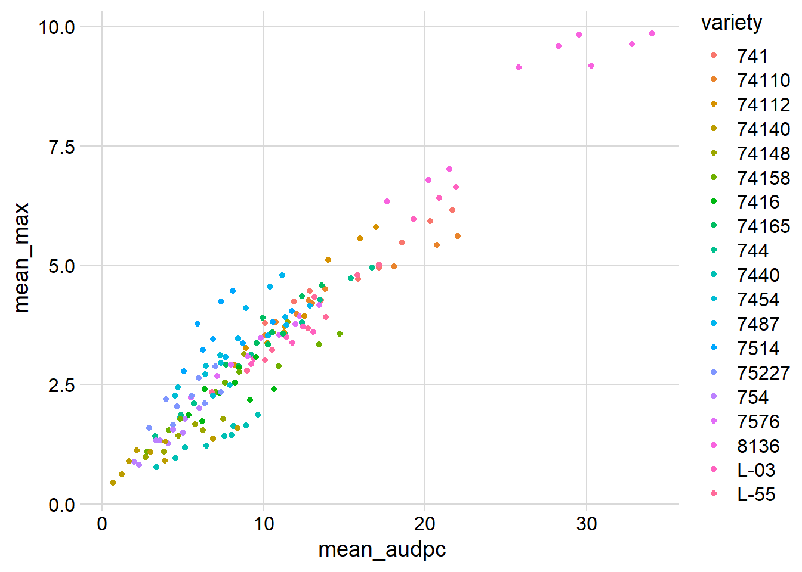
Fit and residuals
m_audpc <- lmer(mean_audpc ~ variety + (1 | year), data = sev_gera)
simres <- simulateResiduals(m_audpc)
plot(simres)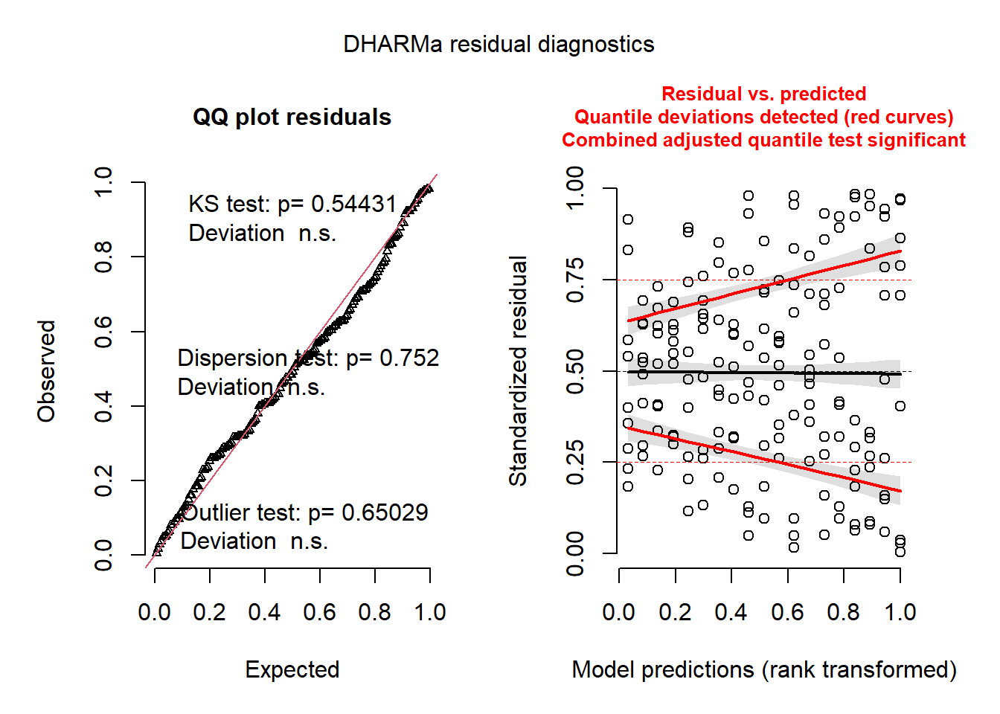
Obtain estimates of the means and perform multiple comparison
sev_audpc_gera_sk <- with(sev_gera,
SK(x= variety,
y=mean_audpc,
model='y ~ x',
which='x'))
plot(sev_audpc_gera_sk)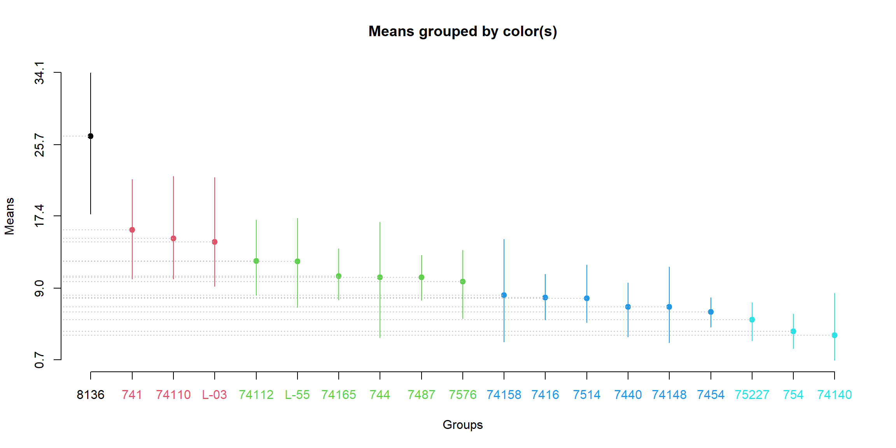
sev_gera_sk <- summary(sev_audpc_gera_sk)## Levels Means SK(5%)
## 8136 26.676418 a
## 741 15.776675 b
## 74110 14.813473 b
## L-03 14.378145 b
## 74112 12.154611 c
## L-55 12.126292 c
## 74165 10.404052 c
## 744 10.268851 c
## 7487 10.267067 c
## 7576 9.783390 c
## 74158 8.223117 d
## 7416 7.921668 d
## 7514 7.841918 d
## 7440 6.867222 d
## 74148 6.853990 d
## 7454 6.257841 d
## 75227 5.358558 e
## 754 3.990370 e
## 74140 3.529444 e# severity
p2 <- sev_gera %>%
ggplot(aes(reorder(variety, mean_audpc), mean_audpc))+
geom_boxplot()+
labs(x = "", y = "AUDPC", title = "Site: Gera", subtitle = "Severity")+
coord_flip()
sev_gera_sk$Means <- round(sev_gera_sk$Means, 1)
# Means table
p2 + gridExtra::tableGrob(sev_gera_sk %>% rename(Cultivar = Levels), rows = rownames("Levels"),
theme = ttheme_minimal(padding = unit(c(4, 4.5), "mm")))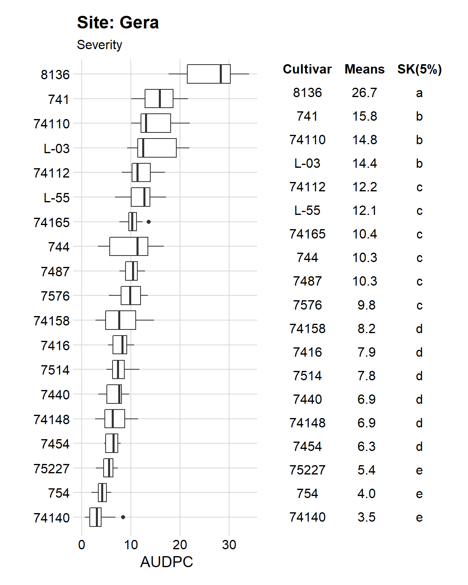
sev_jimma <- sev %>%
filter(site == "jimma")sev_jimma %>%
ggplot(aes(reorder(variety, mean_audpc), mean_audpc))+
geom_boxplot()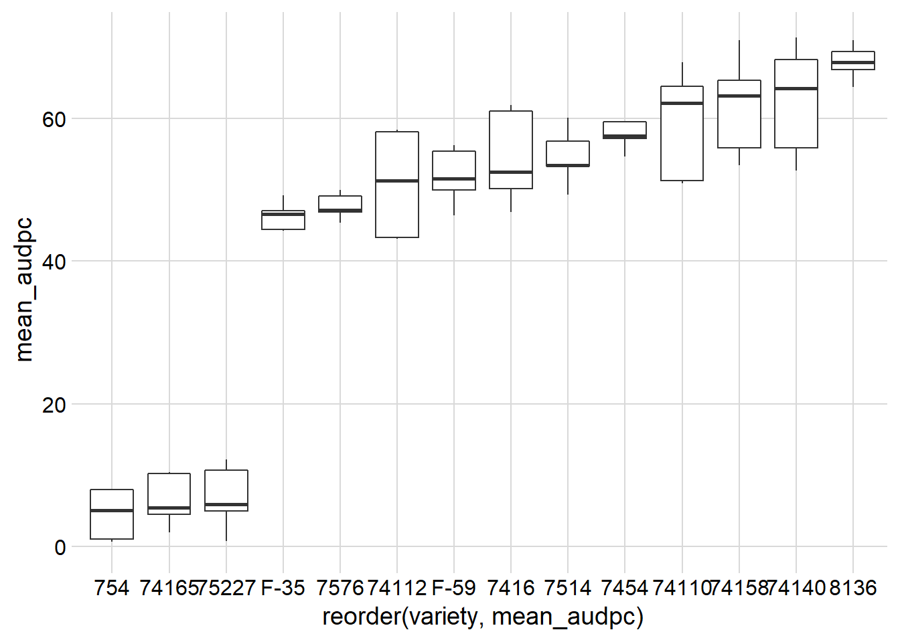
sev_jimma %>%
ggplot(aes(mean_audpc, mean_max, color = variety))+
geom_point()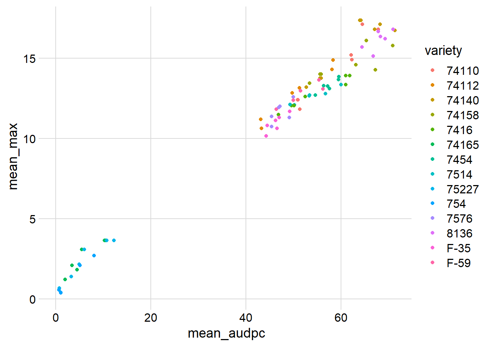
Fit and residuals
m_audpc <- lmer(mean_audpc ~ variety + (1 | year), data = sev_jimma)
simres <- simulateResiduals(m_audpc)
plot(simres)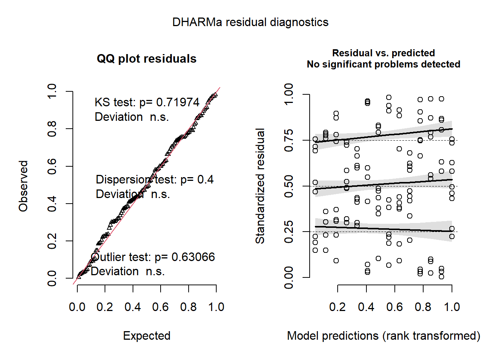
Obtain estimates of the means and perform multiple comparison
sev_audpc_jimma_sk <- with(sev_jimma,
SK(x= variety,
y=mean_audpc,
model='y ~ x',
which='x'))
plot(sev_audpc_jimma_sk)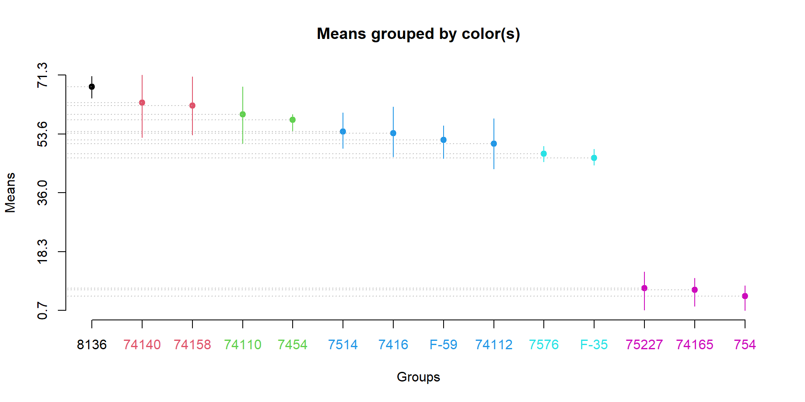
sev_jimma_sk <- summary(sev_audpc_jimma_sk)## Levels Means SK(5%)
## 8136 67.844507 a
## 74140 62.991301 b
## 74158 62.193329 b
## 74110 59.592731 c
## 7454 57.863888 c
## 7514 54.402465 d
## 7416 53.915681 d
## F-59 51.909342 d
## 74112 50.718147 d
## 7576 47.748344 e
## F-35 46.476915 e
## 75227 7.304419 f
## 74165 6.803957 f
## 754 5.028582 f# severity
p2 <- sev_jimma %>%
ggplot(aes(reorder(variety, mean_audpc), mean_audpc))+
geom_boxplot()+
labs(x = "", y = "AUDPC", title = "Site: Jimma", subtitle = "Severity")+
coord_flip()
sev_jimma_sk$Means <- round(sev_jimma_sk$Means, 1)
# Means table
p2 + gridExtra::tableGrob(sev_jimma_sk %>% rename(Cultivar = Levels), rows = rownames("Levels"),
theme = ttheme_minimal(padding = unit(c(4, 4.5), "mm")))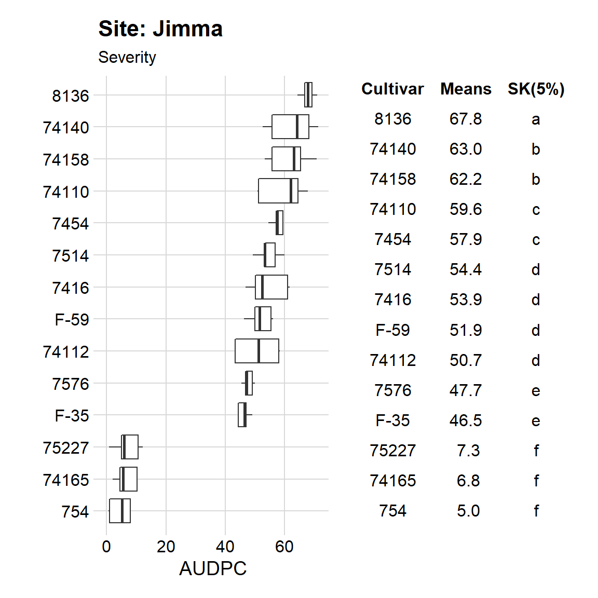
sev_metu <- sev %>%
filter(site == "metu")sev_metu %>%
ggplot(aes(reorder(variety, mean_audpc), mean_audpc))+
geom_boxplot()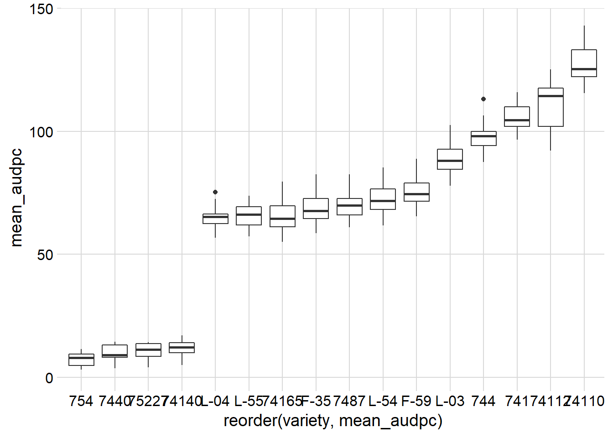
sev_metu %>%
ggplot(aes(mean_audpc, mean_max, color = variety))+
geom_point()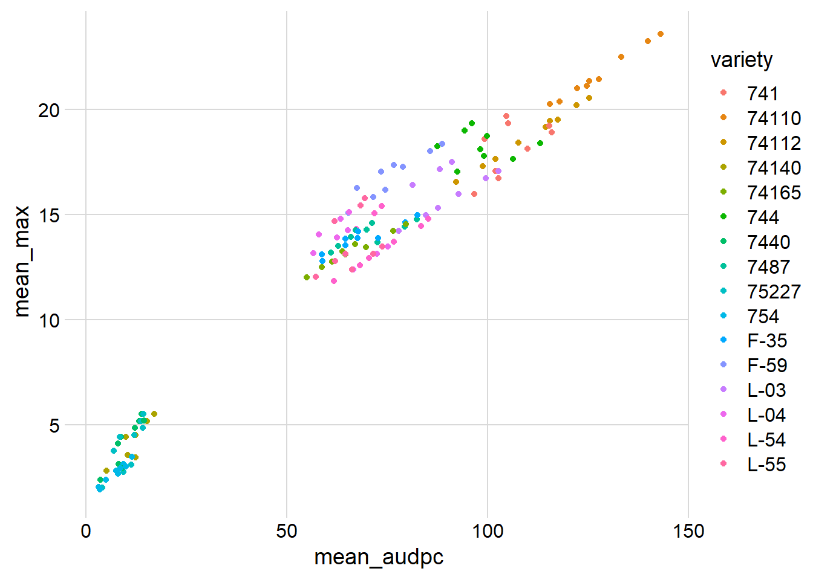
Fit and residuals
m_audpc <- lmer(mean_audpc ~ variety + (1 | year), data = sev_metu)
simres <- simulateResiduals(m_audpc)
plot(simres)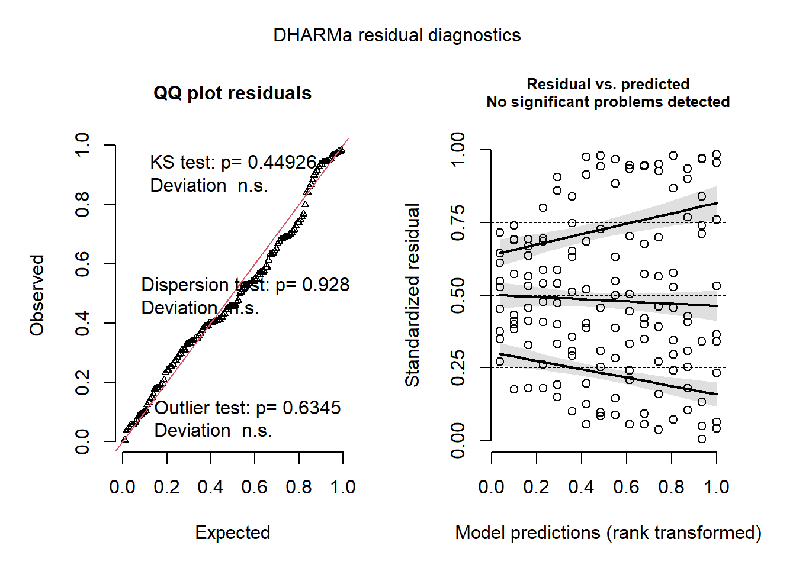
Obtain estimates of the means and perform multiple comparison
sev_audpc_metu_sk <- with(sev_metu,
SK(x= variety,
y=mean_audpc,
model='y ~ x',
which='x'))
plot(sev_audpc_metu_sk)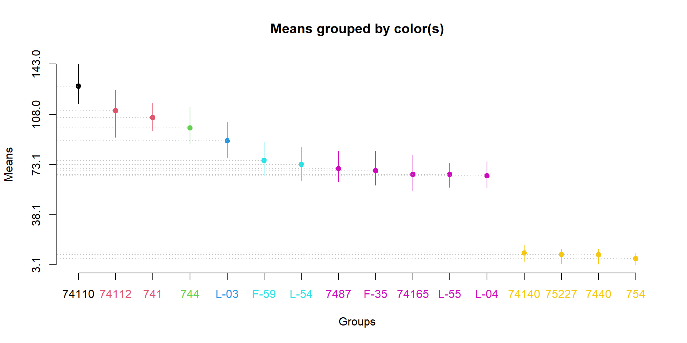
sev_metu_sk <- summary(sev_audpc_metu_sk)## Levels Means SK(5%)
## 74110 127.719125 a
## 74112 110.605572 b
## 741 105.712751 b
## 744 98.548959 c
## L-03 89.498164 d
## F-59 75.837610 e
## L-54 73.135356 e
## 7487 70.273526 f
## F-35 68.569806 f
## 74165 66.271085 f
## L-55 66.128823 f
## L-04 65.061526 f
## 74140 11.511544 g
## 75227 10.487092 g
## 7440 10.142476 g
## 754 7.364677 g# severity
p2 <- sev_metu %>%
ggplot(aes(reorder(variety, mean_audpc), mean_audpc))+
geom_boxplot()+
labs(x = "", y = "AUDPC", title = "Site: Metu", subtitle = "Severity")+
coord_flip()
sev_metu_sk$Means <- round(sev_metu_sk$Means, 1)
# Means table
p2 + gridExtra::tableGrob(sev_metu_sk %>% rename(Cultivar = Levels), rows = rownames("Levels"),
theme = ttheme_minimal(padding = unit(c(4, 4.5), "mm")))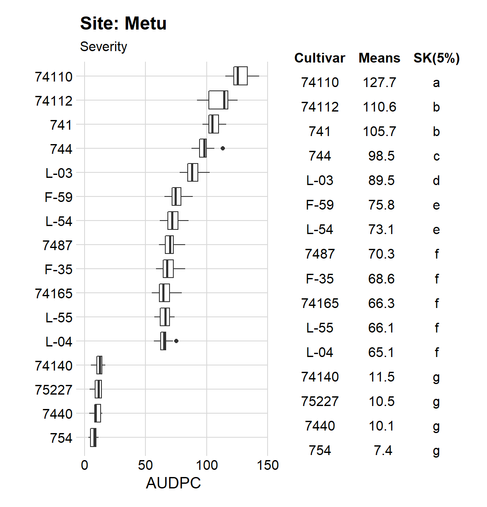
sev_tepi <- sev %>%
filter(site == "tepi")sev_tepi %>%
ggplot(aes(reorder(variety, mean_audpc), mean_audpc))+
geom_boxplot()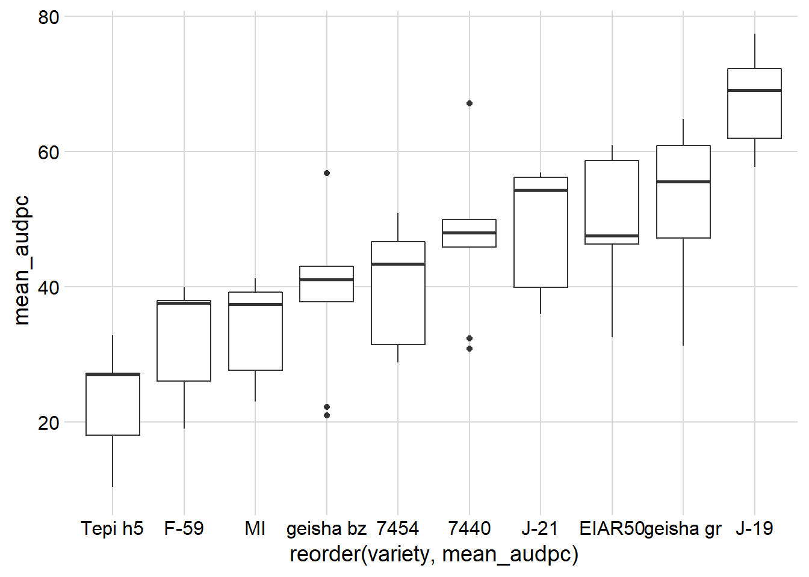
sev_tepi %>%
ggplot(aes(mean_audpc, mean_max, color = variety))+
geom_point()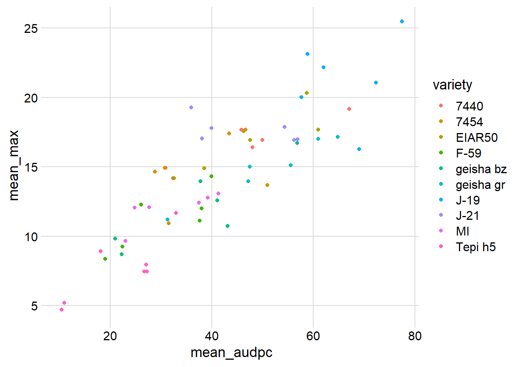
Fit and residuals
m_audpc <- lmer(mean_audpc ~ variety + (1 | year), data = sev_tepi)
simres <- simulateResiduals(m_audpc)
plot(simres)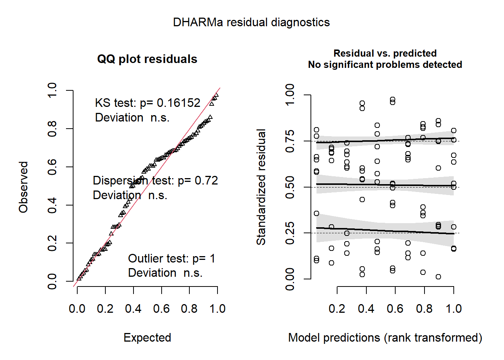
Obtain estimates of the means and perform multiple comparison
sev_audpc_tepi_sk <- with(sev_tepi,
SK(x= variety,
y=mean_audpc,
model='y ~ x',
which='x'))
plot(sev_audpc_tepi_sk)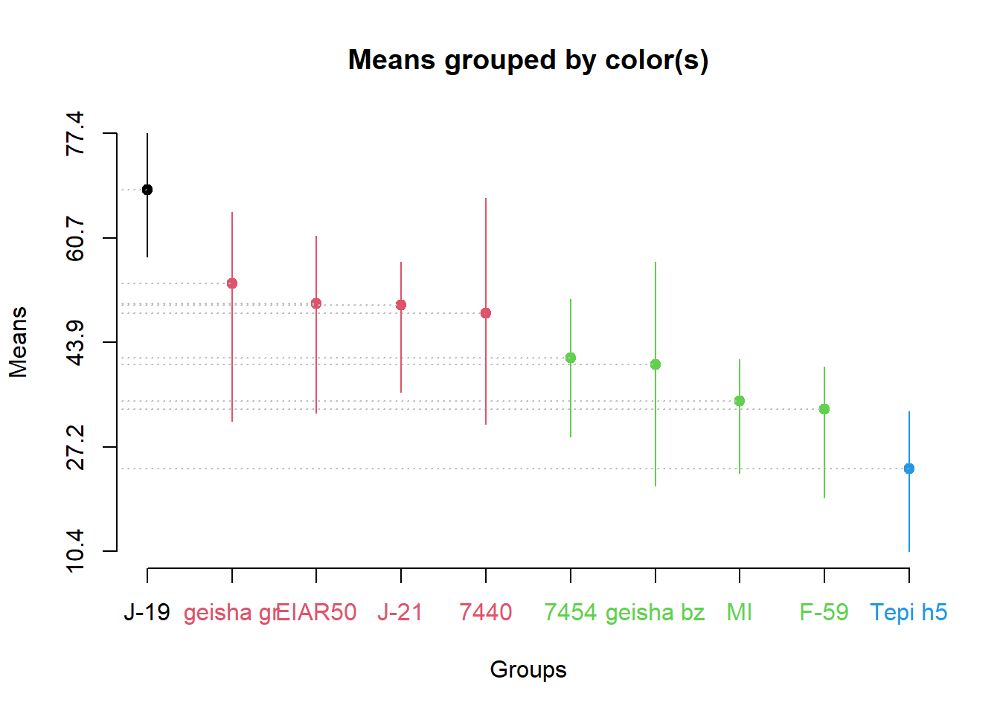
sev_tepi_sk <- summary(sev_audpc_tepi_sk)## Levels Means SK(5%)
## J-19 68.42657 a
## geisha gr 53.35601 b
## EIAR50 50.20696 b
## J-21 49.85894 b
## 7440 48.55476 b
## 7454 41.44446 c
## geisha bz 40.32492 c
## MI 34.58165 c
## F-59 33.18520 c
## Tepi h5 23.71149 d# severity
p2 <- sev_tepi %>%
ggplot(aes(reorder(variety, mean_audpc), mean_audpc))+
geom_boxplot()+
labs(x = "", y = "AUDPC", title = "Site: tepi", subtitle = "Severity")+
coord_flip()
sev_tepi_sk$Means <- round(sev_tepi_sk$Means, 1)
# Means table
p2 + gridExtra::tableGrob(sev_tepi_sk %>% rename(Cultivar = Levels), rows = rownames("Levels"),
theme = ttheme_minimal(padding = unit(c(4, 4.5), "mm")))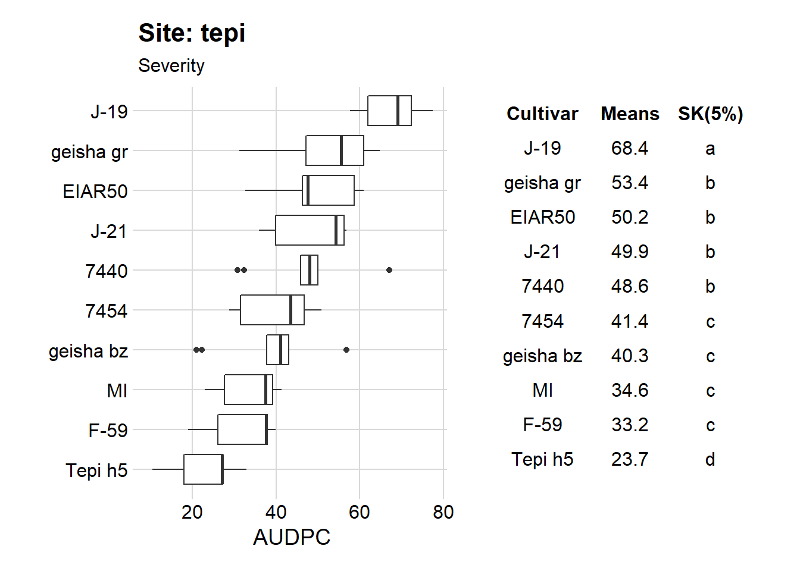
sev_agaro_sk %>%
bind_rows(sev_gera_sk, sev_jimma_sk, sev_metu_sk, sev_tepi_sk, .id = "Site") %>%
remove_rownames() %>%
mutate(Site = recode(Site, `1` = "Agaro", `2` = "Gera", `3` = "Jimma", `4` = "Metu", `5` = "Tepi"),
Means = round(Means, digits = 1)) %>%
unite(Severity, Means, `SK(5%)`, sep = " ", remove = FALSE, na.rm = FALSE) %>%
dplyr::select(-Means, -`SK(5%)`) %>%
spread(key = Site, value = Severity) %>%
rename(Genotype = Levels) %>%
replace(., is.na(.), "-") %>%
gt::gt() %>%
cols_align(
align = "right"
)| Genotype | Agaro | Gera | Jimma | Metu | Tepi |
|---|---|---|---|---|---|
| 741 | - | 15.8 b | - | 105.7 b | - |
| 74110 | 69.4 b | 14.8 b | 59.6 c | 127.7 a | - |
| 74112 | 55.9 c | 12.2 c | 50.7 d | 110.6 b | - |
| 74140 | 28.5 d | 3.5 e | 63 b | 11.5 g | - |
| 74148 | 66.5 b | 6.9 d | - | - | - |
| 74158 | - | 8.2 d | 62.2 b | - | - |
| 7416 | - | 7.9 d | 53.9 d | - | - |
| 74165 | - | 10.4 c | 6.8 f | 66.3 f | - |
| 744 | - | 10.3 c | - | 98.5 c | - |
| 7440 | 58.4 c | 6.9 d | - | 10.1 g | 48.6 b |
| 7454 | 26.7 d | 6.3 d | 57.9 c | - | 41.4 c |
| 7487 | - | 10.3 c | - | 70.3 f | - |
| 7514 | - | 7.8 d | 54.4 d | - | - |
| 75227 | - | 5.4 e | 7.3 f | 10.5 g | - |
| 754 | - | 4 e | 5 f | 7.4 g | - |
| 7576 | - | 9.8 c | 47.7 e | - | - |
| 8136 | - | 26.7 a | 67.8 a | - | - |
| EIAR50 | - | - | - | - | 50.2 b |
| F-35 | 53.2 c | - | 46.5 e | 68.6 f | - |
| F-59 | 66.7 b | - | 51.9 d | 75.8 e | 33.2 c |
| geisha bz | - | - | - | - | 40.3 c |
| geisha gr | - | - | - | - | 53.4 b |
| J-19 | - | - | - | - | 68.4 a |
| J-21 | - | - | - | - | 49.9 b |
| L-03 | 80.9 a | 14.4 b | - | 89.5 d | - |
| L-04 | - | - | - | 65.1 f | - |
| L-45 | 62.3 c | - | - | - | - |
| L-54 | 55.4 c | - | - | 73.1 e | - |
| L-55 | - | 12.1 c | - | 66.1 f | - |
| MI | - | - | - | - | 34.6 c |
| Tepi h5 | - | - | - | - | 23.7 d |